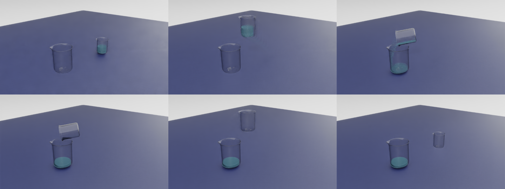
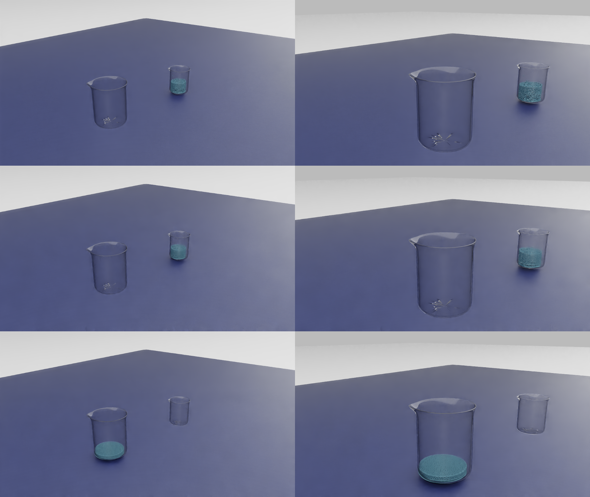

物理粒子和画面粒子都用 3 mm
原版把很细的物理粒子画成更大的球，球会互相覆盖，容易看成碎渣或泡沫。现在物理接触、粒子间距和显示宽度一致。这里的 3 mm 是仿真工程尺度，不是现实水分子的大小。
本周第一次在 LabUtopia 真实双烧杯场景中完成了可重复的整杯转移。结果不再只是静置不漏，而是液体从源杯流入目标杯，并在结束帧全部留在目标杯内。
先看最终全景。画面中的两个容器都是 LabUtopia 原场景烧杯，不是为了液体实验临时换成的方盒。
结论口径：以上数字是本次指定场景、液量、参数和轨迹的结束帧回读，不代表任意容器、任意液量或任意动作都已经适配。
进步不是简单地换了一个水的颜色，而是把粒子尺度、烧杯内壁、液体模型和倒液动作统一成一套能协同工作的方案。
原版把很细的物理粒子画成更大的球，球会互相覆盖，容易看成碎渣或泡沫。现在物理接触、粒子间距和显示宽度一致。这里的 3 mm 是仿真工程尺度，不是现实水分子的大小。
看得见的玻璃模型不等于液体能碰到的内壁。最终方案为每个烧杯建立 145 个开放式碰撞单元，保留杯口，同时封住杯壁与杯底。
补齐粒子自碰撞、连续碰撞检测、求解强度与液体材料参数，让粒子不仅“受重力下落”，还会以更像一团液体的方式相互作用。
源杯采用连续的移动、倾倒、停留和回正动作，避免跳帧和突变。固定的 690 步轨迹也让每次验证可以比较同一个过程。
这三种方案承担的验证任务不同，用来说明技术演进，不是同条件性能排行：第一种是静置起点，第二种是视觉参考，第三种才是最终方案。
这一阶段先解决“真实烧杯里能不能静置一团粒子”。物理验证有进展，但画面中水的主体不连贯，还没有证明完整倒液能做好。

参考场景使用约 30 cm 宽的规则方缸、简单盒状内壁和约 20 mm 粒子。容器大、边界规则，所以大粒子和连续表面更容易稳定地呈现出来。
最终方案借鉴 InternData 公开示例的 3 mm PBD 液体配方与呈现思路，同时由本项目完成真实烧杯碰撞、倒液轨迹、粒子回读和独立交付封装。
视频负责说明动作和观感，粒子回读负责说明最终去了哪里；两类证据来自同一条最终轨迹。


交付包已经把场景、烧杯、液体快照、材质依赖和验证证据放在同一个独立目录中。
完整交付根目录：
/cpfs/shared/simulation/zhuzihou/dev/LabUtopia/outputs/usd_asset_packages/lab_001_level1_pour_interndata_liquid_v1_20260714
这个目录可以整体复制，不依赖报告页面中的旧实验文件。
lab_001_level1_pour_interndata_liquid_v1.usda，打开后看到液体稳定装在源杯。lab_001_level1_pour_interndata_pour_result_v1.usda，打开后看到液体全部位于目标杯。两个 USD 是便于裸打开检查的稳定快照。完整 690 步动作由外部轨迹控制脚本播放，不是单个 USD 自带的自动动画。
包内同时包含全景视频、近景视频、关键帧、粒子统计、干净目录验证和可追溯清单，便于复核这次结果。